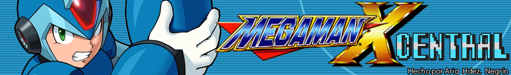
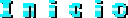
Detalles de
Mega Man Star Force Legacy Collection -
Opciones de Visualización, Desactivar Encuentros Aleatorios, Juego Online y Más
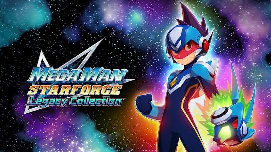
Siguiendo al
nuevo tráiler de la Tokyo Game Show,
Rockman Unity
ha ido a Twitter para expandir en las numerosas funciones que
Mega Man Star Force Legacy Collection
traerá y han sido señaladas en el tráiler...
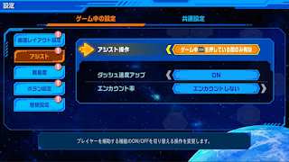
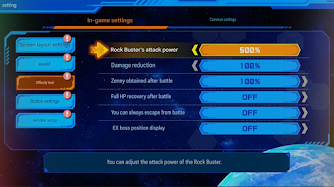
Opciones de Asistencia
- Desde el menú de opciones, puedes ajustar el ratio de encuentros con enemigos e, incluso, desactivarlo por completo.
La velocidad al correr de Geo puede aumentarse y el poder del Mega Buster puede ser aumentado hasta el 500%.
También encontraréis opciones para garantizar escapar de los combates, recibir siempre Zeni como recompensa,
restaurar PV automáticamente tras los combates, y hasta revelar las ubicaciones de los jefes EX.
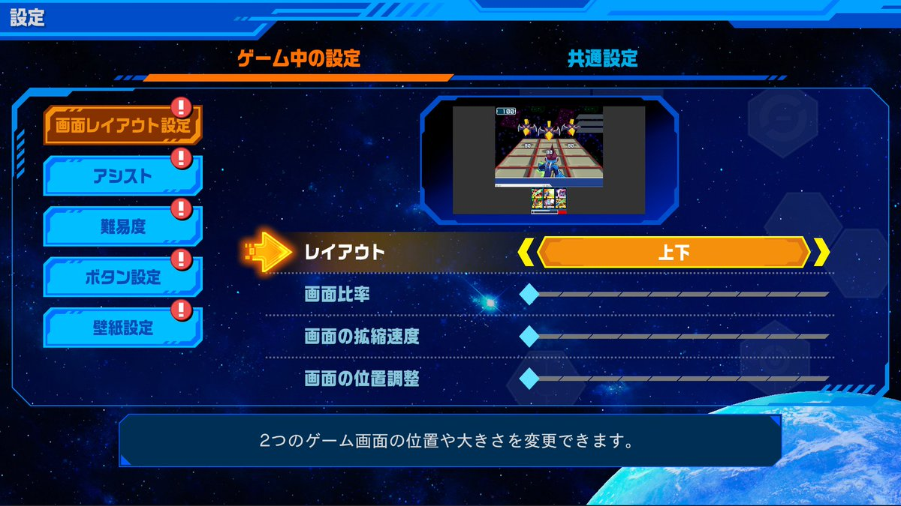
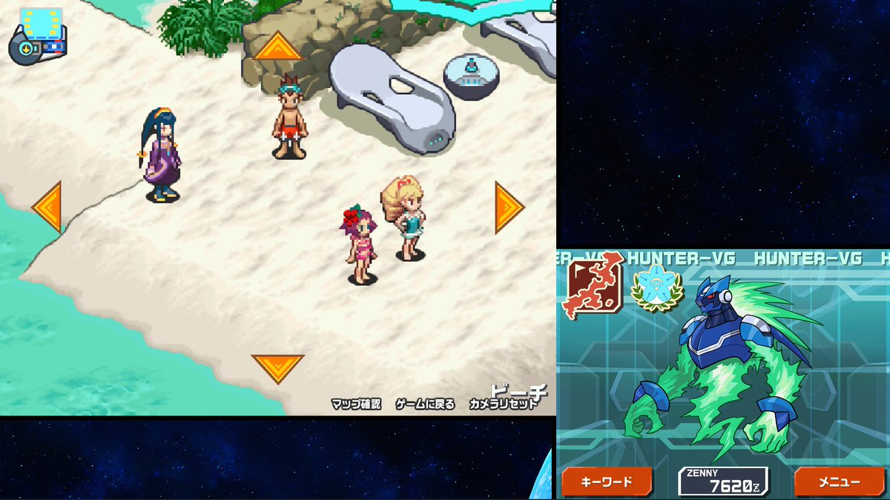
Diseño de Pantalla
- El diseño de doble pantalla puede ser personalizado a tu gusto, con opciones para ajustar la colocación y el ratio de cada pantalla.
Una función de "cámara libre" también puede ser activada con el joystick derecho, aunque no se han dado más detalles al respecto.
Esperamos oír más de las impresiones de la demo del TGS.
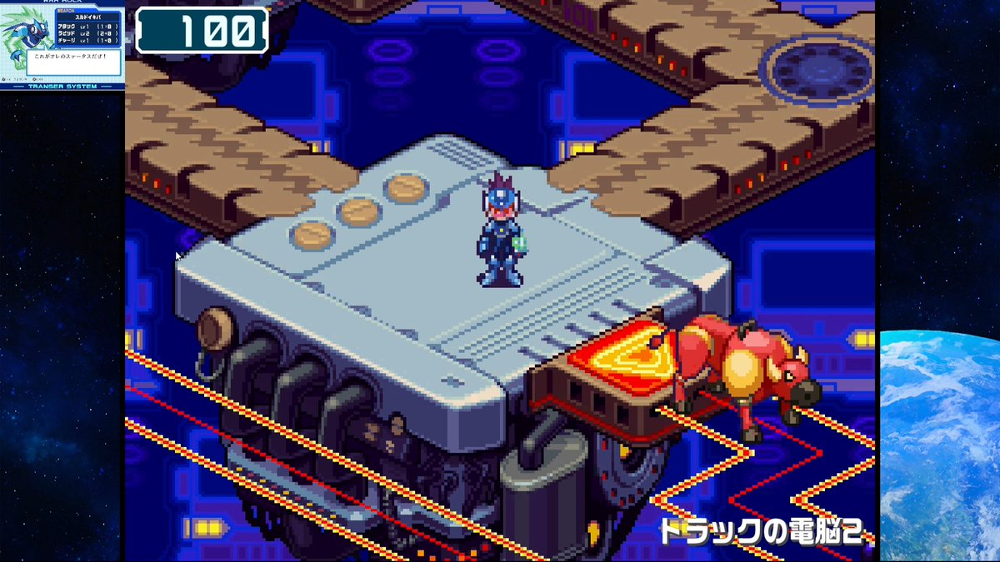
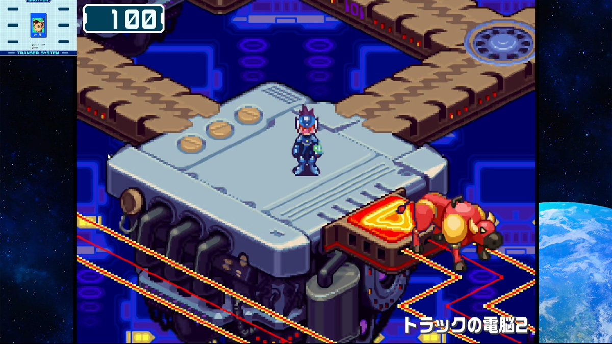
Filtro de Alta Resolución
- Como con
Mega Man Battle Network Legacy Collection
hizo antes,
Star Force Legacy Collection
incluye la opción de activar un filtro de alta resolución.
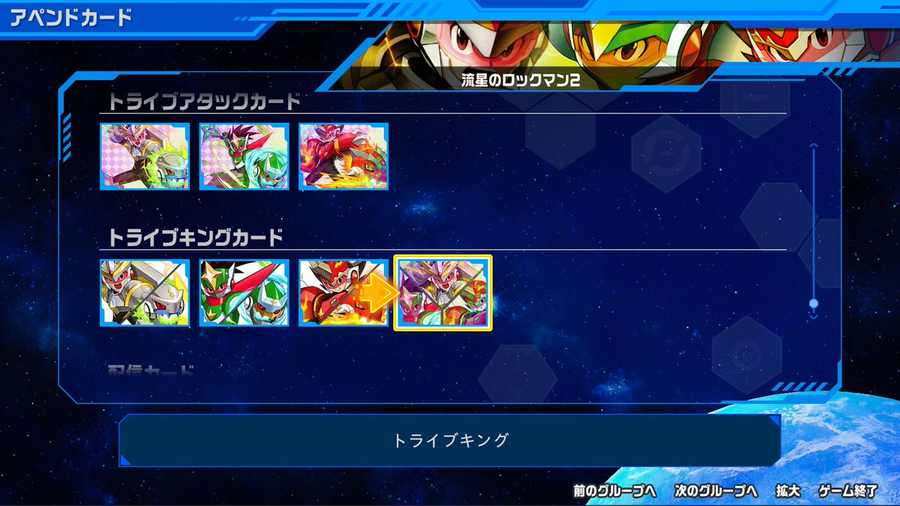
Cartas de Batalla Exclusivas de Evento
- Cartas de Batalla que alguna vez fueron exclusivas para el público japonés mediante eventos y merch ahora estarán disponibles.
Sin embargo, Rockman Unity señala que ciertas cartas no serán implementadas; aunque todavía no sabemos cuáles son.
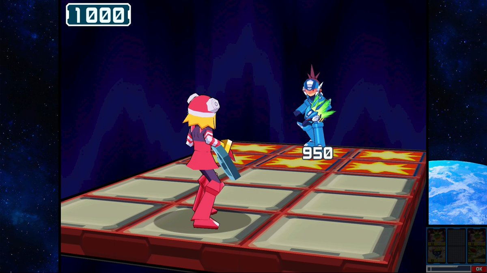
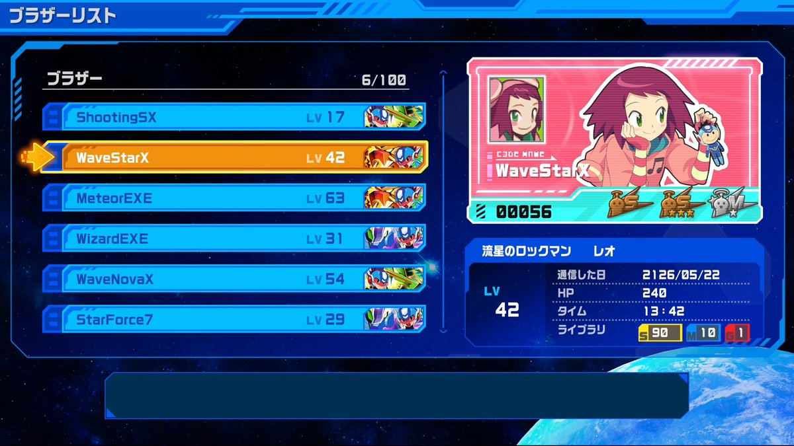
Combates Online
- Los jugadores podrán participar en combates online informales o de rango para ganar Puntos de Batalla.
Los oponentes online podrán ser registrados como Hermanos, con un límite de hasta 100.
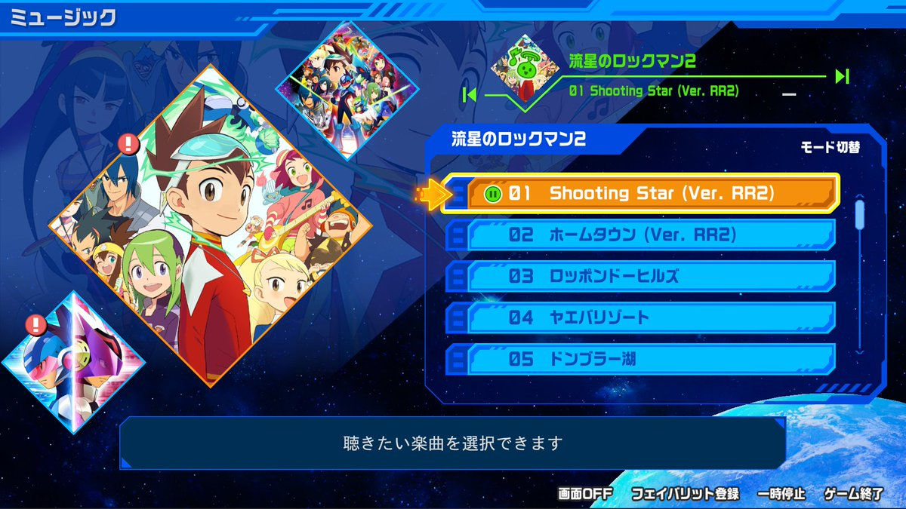
Reproductor de Música
- Además de las BSOs de los tres juegos, nuevas pistas compuestas podrán ser escuchadas a través del Reproductor de Música.
¡Las nuevas pistas también se podrán escuchar mientras juegas!
Se esperan que lleguen más detalles de la colección en lo que se acerca la Tokyo Game Show, así que estad atentos para las impresiones de la demo.
Se espera que
Mega Man Star Force Legacy Collection
salga en 2026 para Nintendo Switch, PS5, PS4, Xbox Series y PC.